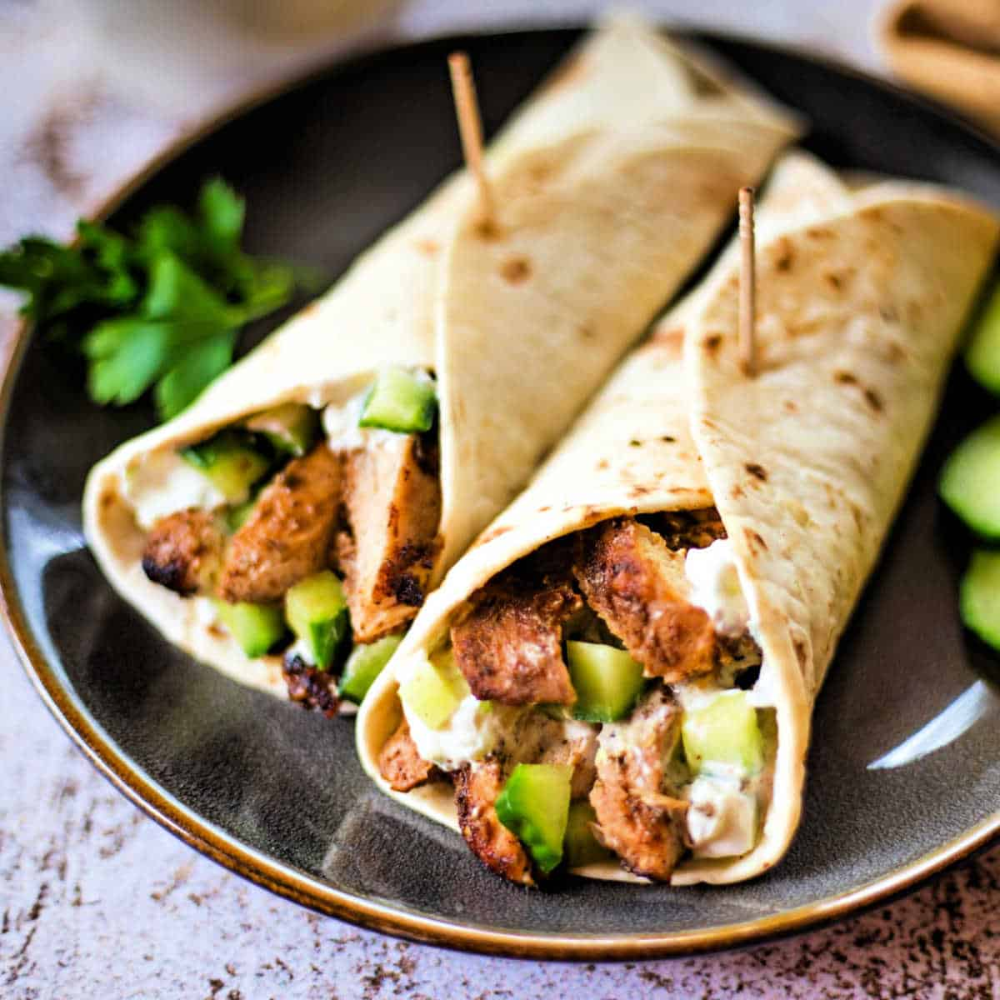

MY FAVOURITE FOOD(S)
I don't have one singular favourite food. I got 2 actually. They are: Biryani and Shawarma. Two amazing foods. They both are from different cultures.
Biryani is a food of South Asian origin and is my most favourite as it is made up of different spices and flavours even though if you somehow end up biting into a cardamom or a clove by accident while eating, it won't take even 1 second to ruin your tastebuds! These 2 are mainly just used to give the biryani a nice smell. Biryani can be made with either chicken, beef, mutton or even lamb. It could also be made with just vegetables which in my opinion... just tastes like whatever. It doesn't taste that good.

Shawarma is a food of Middle Eastern origin and is my another favourite food also because of how it tastes and it could also be made either with spice or no spice. A plus point about shawarma is that there is no risk of biting into a cardamom or a clove as they are mostly not used. Shawarma can also be made with either chicken, beef, mutton or lamb. No idea if it can be made with like camel or something but whatever. It could be made with something called a falafel too. Falafel is basically a vegan option in shawarma. As far as I know, they are made up of chickpeas.
